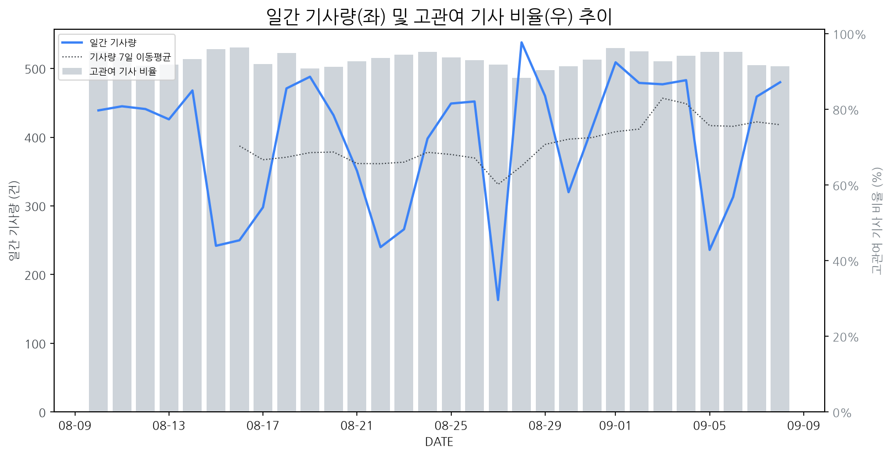

1
시장 활동 지표
기사량 추세 & 이상 징후 탐지
시장의 '전체 기사량'이 평소보다 비정상적으로 급증했는지(Spike)를 차트로 확인하고, LLM이 분석한 급등의 핵심 원인을 파악할 수 있음

고관여 기사란? 산업 연관 키워드로 수집된 기사들 중 디스플레이 키워드에 가중치를 반영하여 도출된 관련성 높은 기사
수집된 기사 수 (2026-09-08)
480
-6% WoW
기사량 변동 수준 (7일 이동평균 대비)
±6.7% 이하
2
오늘의 키워드
급격한 관심 ↑, 주목해야 할 키워드
1
화웨이
+3.2σ
화웨이가 애플 이벤트 직전 폴더블 신제품을 공개하며 삼성과의 폴더블 시장 경쟁에 참전했습니다.
Related Metrics
금일 언급량: 13, 전일 대비: +2
Interpretation
폴더블 경쟁 심화
Next Step
핵심 토픽 'Foldable_Display_Topic' 관련 신호입니다. 3번 섹션(키워드 감성분석)에서 해당 토픽의 감성 변동을 교차 확인하세요.
2
bmw
+2.8σ
BMW 모토라드가 신형 어드벤처 모터사이클 '뉴 F 450 GS'를 국내 출시하며 관심 집중
Related Metrics
금일 언급량: 7, 전일 대비: +7
Interpretation
고성능 모빌리티 수요 증가
Next Step
'bmw' 관련 상세 기사 및 경쟁사 반응 모니터링
3
벤큐
+2.3σ
벤큐가 아이맥 및 듀얼 모니터 사용자 눈 건강을 위한 신형 스크린바를 출시하며 소비자 관심 급증.
Related Metrics
금일 언급량: 5, 전일 대비: +5
Interpretation
모니터 액세서리 시장 성장
Next Step
'벤큐' 관련 상세 기사 및 경쟁사 반응 모니터링
4
샤오미
+1.9σ
샤오미, IFA 2026에서 마이크로 RGB TV 공개 및 폴더블 폰 경쟁 참전이 주목받음.
Related Metrics
금일 언급량: 9, 전일 대비: +2
Interpretation
신규 디스플레이 기술 및 시장 경쟁 심화
Next Step
핵심 토픽 'Foldable_Display_Topic' 관련 신호입니다. 3번 섹션(키워드 감성분석)에서 해당 토픽의 감성 변동을 교차 확인하세요.
3
실시간 Risk 키워드
경계해야 할 시그널 탐지
특정 토픽의 부정 감성 점수가 급등할 때 이를 즉시 탐지하고, "근거 기사" 링크를 통해 리스크의 실체를 빠르게 파악할 수 있음
키워드 분석 결과, 오늘은 걱정할 만한 하락 신호가 없습니다. (부정 언급량 변화: +1.5σ 이내)
4
주요 이벤트 모니터링
실시간 산업 동향 파악을 위한 주요 활동
최근 발생한 주요 기업들의 신제품 출시, 투자 등 주요 이벤트를 제공하여 매일 경쟁사 동향을 확인할 수 있음
에이서는 IFA 2026에서 1000Hz 주사율의 혁신적인 게이밍 모니터와 휴대용 핸드헬드 PC를 공개하며 기술력을 과시했습니다. 이번 신제품 공개는 게이밍 시장에서의 경쟁 심화를 예고합니다.
Impact
이는 초고주사율 디스플레이 기술의 발전과 휴대용 게임 기기 시장의 확대를 가속화하며, 프리미엄 게이밍 모니터 시장의 경쟁을 더욱 치열하게 만들 것입니다.
Next Step
디스플레이 제조 기업은 에이서의 초고주사율 기술 동향을 면밀히 분석하고, 자체적인 기술 개발 로드맵을 재점검하여 차세대 게이밍 디스플레이 시장에서의 경쟁 우위를 확보해야 합니다.
애플이 첫 폴더블 기기를 공개를 하루 앞두고 있으며, 이에 따라 그동안 제기되었던 공급망 및 생산 능력에 대한 우려가 해소될 수 있을지 업계의 관심이 집중되고 있습니다. 이번 공개는 애플의 폴더블 시장 진출 의지와 실행력을 보여주는 중요한 기점이 될 것입니다.
Impact
애플의 폴더블 시장 진출은 차세대 디스플레이 기술인 폴더블 패널 시장의 규모를 확대하고, 관련 부품 공급망의 경쟁을 심화시키며, 기술 혁신을 가속화할 잠재적 영향력을 가집니다.
Next Step
주요 디스플레이 제조 기업은 애플의 폴더블 패널 수주 가능성을 면밀히 검토하고, 안정적인 공급 능력 확보 및 차별화된 기술 경쟁력 강화를 위한 투자를 검토해야 합니다.
일본 디스플레이 기업 JDI가 모바라 공장 매각을 추진하며 마이크론 및 반도체 기판 업체 등 다수의 기업이 관심을 보이고 있습니다. 이는 JDI의 사업 재편 및 공장 운영 전략 변화를 시사합니다.
Impact
이 매각은 반도체 관련 기업들의 디스플레이 제조 영역 진출 또는 협력 강화 가능성을 열어주며, 관련 기술 및 공급망 재편에 영향을 줄 수 있습니다.
Next Step
기존 디스플레이 제조 기업들은 잠재적 경쟁자 또는 협력 파트너의 변화를 주시하며, 자체 기술 경쟁력 강화 및 시장 변화에 대한 민첩한 대응 전략을 수립해야 합니다.
레이네오(Rayneo)가 카메라 모듈을 제거한 AI 안경 'iO'를 공개했으며, 이 제품은 55개 언어에 대한 실시간 통역 기능을 제공한다.
Impact
카메라 의존도를 낮추고 AI 기반 실시간 통역 기능을 강조한 웨어러블 디바이스의 등장은 스마트 안경 시장의 새로운 수요를 창출하고, 디스플레이 업계에는 경량화 및 고해상도 소형 디스플레이 기술 경쟁을 심화시킬 수 있다.
Next Step
디스플레이 제조 기업은 소형 고해상도 디스플레이 패널의 효율적인 생산 및 경량화를 위한 기술 개발에 집중하여 레이네오와 같은 AI 기반 웨어러블 기기 시장의 요구에 대응해야 한다.
삼성디스플레이가 샤오미에 대한 OLED 공급량을 절반으로 줄였으며, 이는 중국 디스플레이 제조사들의 파상 공세와 애플에 대한 높은 의존도라는 이중고 속에서 발생했다.
Impact
삼성디스플레이의 주요 고객사 공급량 감소는 OLED 시장 내 경쟁 구도 변화와 삼성디스플레이의 수익성 및 시장 점유율에 부정적인 영향을 미칠 수 있다.
Next Step
공급량 변동 요인 분석을 통해 샤오미와의 관계 재정립 및 대체 고객 확보를 통한 포트폴리오 다각화를 검토해야 한다.